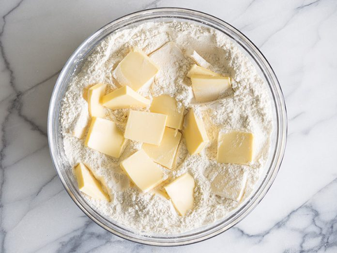
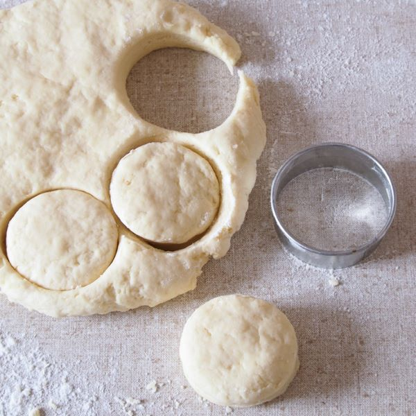

<!DOCTYPE html>
<html></html>
<head>
  <title>Recipe Research</title>
  <link rel="stylesheet" href="styles.css">
  <link rel="preconnect" href="https://fonts.googleapis.com">
  <link rel="preconnect" href="https://fonts.gstatic.com" crossorigin>
  <link href="https://fonts.googleapis.com/css2?family=Josefin+Slab:wght@500;700&family=Martel:wght@400;700&family=Nunito:ital@0;1&display=swap" rel="stylesheet">  <meta charset="UTF-8">
</head>
<body>
    <div class="hero-image">
        
        <div class="title-text">
            <h1>Quintessentially British Buttermilk Scones</h1>
            <h3><em>Time: 30 minutes </em>|<em> Serves: 10-12</em>|<em> Source: <a href="https://www.bbcgoodfood.com/recipes/buttermilk-scones">BBC Good Food</a></em></h3>
            <p>Afternoon tea just wouldn't be the same without warm scones straight from the oven</p>
        </div>
    </div>
    <div class="content">
        <div class="ingredients">
            <div class="ingredients-content">
                <h3>Ingredients</h3>
            <ul>
                <li>450g self-raising flour</li>
                <li>1/4 tsp salt</li>
                <li>100g cold butter, diced</li>
                <li>85g golden caster sugar</li>
                <li>284ml buttermilk</li>
                <li>2 tsp vanilla extrace</li>
                <li>a splash of milk</li>
            </ul>
            </div>
          </div>
          <div class="recipe">
            <div class="recipe-content">
                <p>1. Heat oven to 220C</p>
                <p>2. Put the flour, salt and butter into a food processor and pulse until you cannot feel any lumps of butter (or rub in butter with fingers). Pulse in the sugar.</p>
                
                <p>3. Gently warm the buttermilk (do not throw away the pot) and vanilla in a microwave or pan. Using your largest bowl, quickly tip in some of the flour mix, followed by some of the buttermilk mix, repeating until everything is in the bowl. Use a knife to quickly mix together to form a dough. Do not over-mix it!</p>
                
                <p>4. Tip onto a floured surface and lightly bring together with your hands a couple of times. Press out gently to about 4cm thick and stamp out rounds with a 6cm or 7cm cutter.</p>
                
                <p>5. Add a splash of milk into the buttermilk pot, then use to glaze the top of each scone.</p>
                <p>6. Bake for 10-12 mins until golden and well risen. Eat them warm, room temparature or freeze then reheat them for a treat for later</p>
                
            </div>
          </div>
    </div>    
</body>
</html>